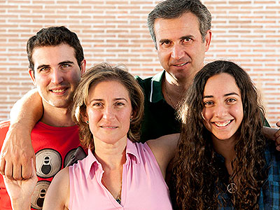

La Familia ante la enfermedad
El diagnóstico de un cáncer supone un fuerte impacto emocional, tanto para el paciente los que le rodean. Nadie, ni el enfermo ni la familia ni el entorno están preparados para recibir esta noticia. Sin embargo, hay que aprender a manejarse ante ella y afrontar juntos esta enfermedad.

A través de esta guía queremos ayudarte ofreciéndote una serie de pautas para ayudar a un ser querido con cáncer. Si a tu pareja, a tu madre o a un familiar le han diagnosticado esta enfermedad, es normal que estés preocupado y tengas dudas o muchas preguntas. ¿Qué hago? ¿Qué le digo? ¿Qué va a pasar? La persona a la que quieres va a necesitar tu apoyo y comprensión ya que la enfermedad y los tratamientos van a suponer cambios importantes no sólo en su vida sino en también en la dinámica familiar, social y laboral.
Es importante que caminéis juntos, que habléis y que toméis decisiones conjuntas, que vayáis solucionando los problemas diarios que puedan surgir y que mantengáis vuestras rutinas en la medida de lo posible, de tal forma que el cáncer no se convierta en único eje de vuestras vidas.
Es normal que a veces sintáis que vuestra fortaleza se desgasta pero recuerda que si estáis + juntos podréis superarlo.
Consejos Prácticos para afrontar la enfermedad de un familiar
-
Participa de la información médica. No hagas del cáncer un tabú. Es importante que lo afrontéis con naturalidad. Comentad juntos la información e implícate en la toma de decisiones, respetando siempre la del paciente.
-
Trata de comprender por lo que está pasando. Cada persona reacciona de forma diferente ante el diagnóstico, los tratamientos y sus efectos secundarios. Trata de ponerte en su lugar.
-
Pregúntale qué cosas le preocupan. Dale la oportunidad para que pueda expresar sus sentimientos y preocupaciones. Esto le ayudará a sentirse comprendido.
-
Escucha y si no sabes que decir, no digas nada. No quites importancia a lo que le sucede y evita las frases hechas para animarle (“no te preocupes”, “deja de pensar en esas cosas”, “tienes que ser positivo/a y fuerte”…).
-
Conoce y muestra interés por sus deseos y necesidades
-
Deja que te cuente. Al principio lo que más se necesita es hablar y expresar los sentimientos. Permítele que lo haga las veces que sean necesarias. No cambies de tema.
-
Respeta su silencio si no quiere hablar. Ofrécele tu apoyo para cuando lo necesite. No es aconsejable hablar de la enfermedad de forma constante.
-
Deja que llore. No tienes que decir o hacer nada especial, lo que más necesita en esos momentos es compañía y afecto. No temas si tú mismo lloras o te emocionas.
-
No comentes con el entorno aspectos relativos a su enfermedad o los tratamientos. Puede que el paciente no desee que sean comentados. Respeta sus deseos.
-
Cuéntale también cómo te sientes tú y qué te preocupa. Le ayudará saber que no está solo.
-
Compartir estos momentos es una manera de fortalecer vuestra relación. Hablad con franqueza y sinceridad sobre lo que os molesta del comportamiento del otro. Sin juicios o críticas.
-
Comparte las cosas importantes, también las cotidianas. Poned un poco de sentido del humor, bromear, desdramatizar, cuidando el momento de hacerlo.
-
En relación a tu vida cotidiana y de trabajo, intenta no asumir más responsabilidades de las que puedas. Recuerda que ahora tu dinámica familiar y personal ha cambiado y la situación requiere un esfuerzo extra tuyo.
-
Puede que el trabajo sea una distracción de la situación difícil que estás sintiendo. No te sientas culpable por ello.
-
Si es posible, habla con tus superiores para que conozcan tu situación personal y que puedas tener flexibilidad horaria y así poder ayudar a tu familiar.
-
Analiza las distintas alternativas. Valora si puedes mantener la situación laboral igual que antes o si es necesario reducir la jornada laboral o te ves obligado a coger una excedencia.
Si eres un familiar… Consejos prácticos para Cuidarte
Cuando el cáncer afecta a tu familia o a un ser querido, también te afecta a ti, a tu salud física y emocional.
-
Sigue manteniendo tus hábitos de vida saludable en la medida de lo posible (sueño, descanso, alimentación, etc.)
-
Realiza ejercicio físico con regularidad. Ayuda a liberar las tensiones diarias y a sentirte mejor.
-
Expresa abiertamente tus emociones. “Ser fuerte” es reconocer el malestar y poder hablarlo. No te sientas culpable si a veces te sientes triste o desanimado. Comparte tus sentimientos.
-
Tómate cada día un tiempo para ti o para realizar una actividad que te apetezca (leer, ir al cine, yoga, relajación…).
-
Planifica las actividades del día y de la semana. Probablemente te tengas que hacer cargo de actividades que antes hacía tu familiar, por lo que tenéis que reorganizar y reestructurar juntos el reparto de tareas, la vida familiar, la vida social y laboral.
-
Evita el aislamiento. Es necesario que te esfuerces por mantener el contacto con amigos y familiares con los que poder reír, pasar buenos ratos o llorar y desahogarte de tus tensiones si es necesario.
-
Pon límite a las demandas excesivas o chantajes emocionales; hay que saber decir NO, sin sentirse culpable por ello.
-
Pide ayuda a otros familiares, amigos para que te sustituyan un rato o te echen una mano. Es una forma de darles también la oportunidad de sentirse útiles.
Y lo más importante… ¡sigue viviendo! Has tenido un cáncer… pero aún te quedan muchas cosas por vivir y por disfrutar.